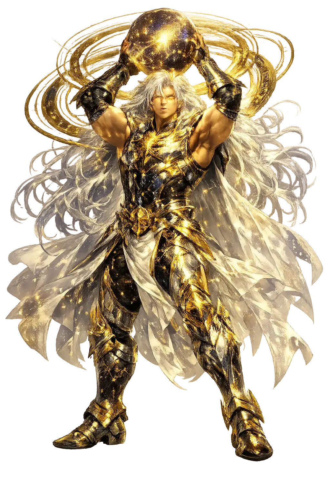
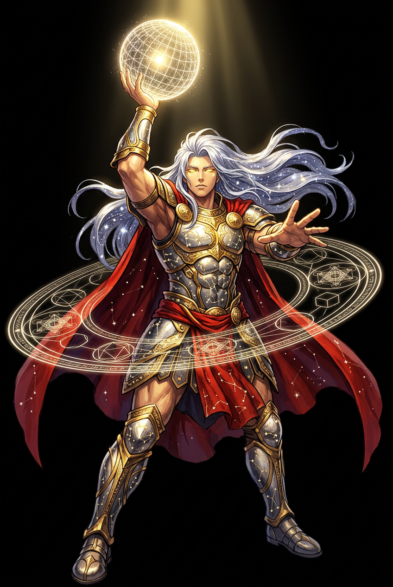

The Authentic Orthography
Upper Air, Light · The Bright Air the Gods Breathe

Unicode restoration and ASCII comparison
Αἰθήρ
The name in its original Greek form. Aithḗr (Αἰθήρ) is attested in the source tradition — “Bright upper air”. Its aspirated consonants, long vowels, and acute accents carry the full phonetic and orthographic weight of the source tradition.
aither
Reduced to plain aither, the name loses everything that made it specific: aspirated consonants, long vowels, and acute accents. What remains is an ASCII string that machines can parse but that no longer speaks with its original voice.
Aithḗr
The Unicode restoration recovers what ASCII flattened. Aithḗr restores aspirated consonants, long vowels, and acute accents, returning the name to its original written dignity. The domain encodes to Punycode, but the browser displays the truth.
Aithḗr.com → xn--aithr-yd1b.com
The non-ASCII characters in Aithḗr are encoded while the ASCII remains visible. To the DNS, it is Punycode. To humanity, it is Aithḗr.
How Aithḗr travels from ancient script to the modern URL
Greek Αἰθήρ; from αἴθω “to burn, blaze"; the bright upper air.
Upper Air, Light
The Unicode restoration Aithḗr preserves Greek stress and length; the ASCII form aither loses these features.
How Aithḗr was spoken
Celestial Fire, the Sky, and the Boundary of the Cosmos
Aithḗr is not the wind that rustles leaves nor the breath mortals breathe. He is the pure, fiery medium that fills the space between the world and the stars, the realm where sun, moon, and planets move. In Hesiod's cosmos he is the son of Erebus and Nyx, the luminous antithesis of darkness.
The transparent sphere that holds the stars; Aithḗr is the medium in which heavenly bodies are embedded.
The fiery radiance of the upper atmosphere, untainted by earth or sea.
The wall that separates Olympus from the lower world, keeping Tartaros outside the ordered cosmos.
Aithḗr is the element the gods breathe; mortals live in the lower, moist air.
Stories of Aithḗr
Aithḗr appears at the very birth of the world, one of the first distinctions made by the yawning void. He is not a hero with a quest; he is a cosmic substance personified, the luminous layer that makes the sky sky.
In Hesiod's Theogony (124–125), Chaos gives rise to Erebus and Nyx; their union produces Aithḗr and Hemera (Day). Where Night and Darkness are bound together, their luminous opposites are born: bright air and daylight. Aithḗr is therefore older than the Titans, older than Olympus, a primordial layer of the universe itself.
Later cosmographers imagined Aithḗr as the protective wall of Zeús, the bright boundary that holds the cosmos together and keeps the chthonic powers — Tartaros and its prisoners — outside the ordered world. In this reading, Aithḗr is not merely above us; he is the fortification of divine order.
The Orphic Hymn to Aether (5) calls him 'the home of the sun, moon, and stars' and the dwelling of the blessed gods. The hymn addresses Aithḗr as the pure element that receives prayer and that shines with unquenchable fire, a deity both physical and transcendent.
Aristotle made Aithḗr the fifth element, quinta essentia, the incorruptible substance of the celestial spheres. For the Stoics, it was the fiery pneuma that animates the cosmos. In Neoplatonism, Aithḗr stood just below the intelligible realm: the first body, luminous and divine. The word passed into Latin and then into modern science as 'ether.'
Every glance at the sky is a meeting with Aithḗr. Not the clouds, not the weather, but the transparent depth that holds the stars — that is what the Greeks named and worshipped. In an age of light pollution and screen glare, the idea of a pure, bright upper air feels almost archaeological. Yet the moment you look up on a clear night and see the Milky Way, you are touching the same substance Hesiod sang about.
Enter Extended Lore